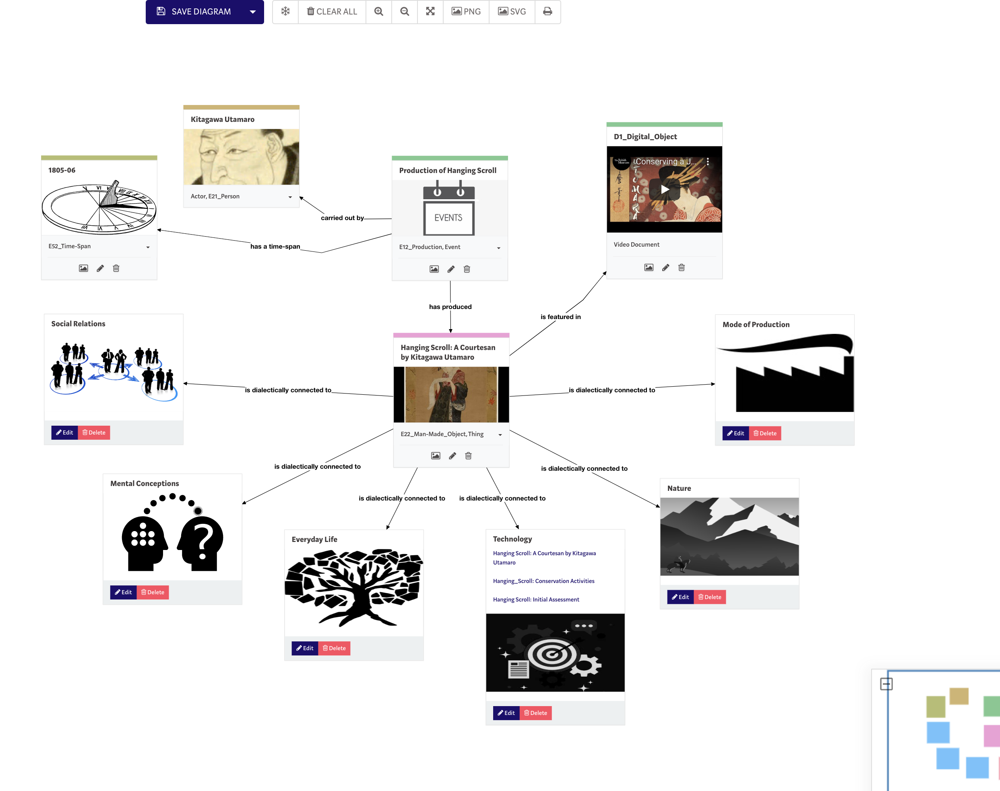

ResearchSpace is a new type of contextualising knowledge system. It promotes collaborative interdisciplinary research allowing people to grow knowledge that relates to and reveals different aspects of society.
Underpinned by a model of argumentation it promotes different levels of detail, or resolution, multiple perspectives (in terms of different vantage points of the same reality), and connections across space and time.
It seeks to support the reality of changing knowledge and preserves its history.
It promotes standpoint and allows different voices to be heard
Bring collections to life by connecting them to different aspects of society and understand their historic relations.
